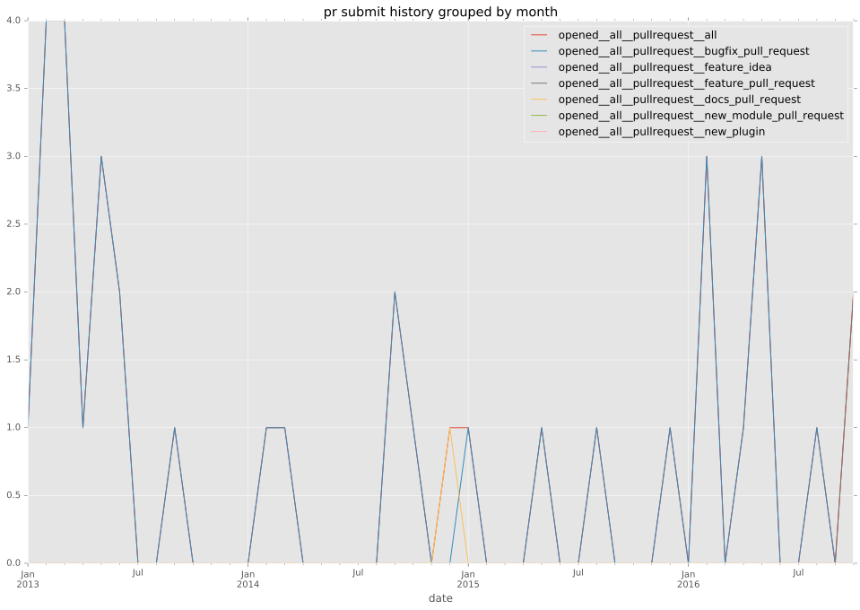
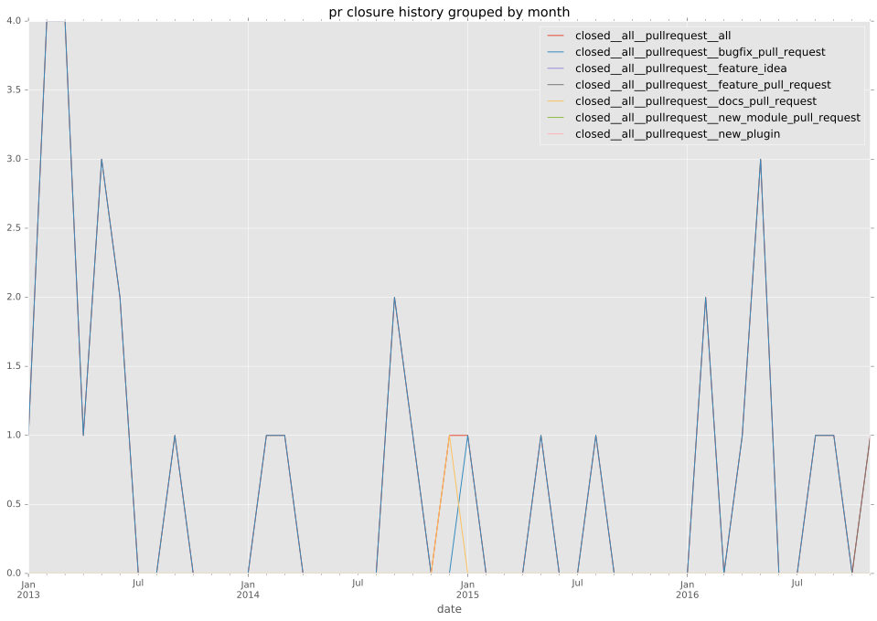

authors
- chrishoffman
maintainers
- manuel-sousa
- chrishoffman
- romanek-adam
contributors
- lorin : 1 commits
- chrishoffman : 46 commits
- abadger : 1 commits
- mscherer : 2 commits
- bcoca : 1 commits
- mavimo : 1 commits
- viruxel : 14 commits
- bradwilson : 1 commits
- dhozac : 2 commits
- zazard : 1 commits
- andsens : 2 commits
- dagwieers : 1 commits
- jctanner : 3 commits
- cstorey : 4 commits
- jpmens : 2 commits
- Draiken : 1 commits
- angstwad : 1 commits
total issue counts
feature pull request: 1
pullrequest: 34
bugfix pull request: 33
feature idea: 2
issue: 16
bug report: 14
issue history
pullrequest history


days open by issue type
bugfix pull request
count: 48
std: 61.3177942947
min: 0
max: 218
median: 0.0
mean: 26.5208333333
all
count: 61
std: 62.7995292524
min: 0
max: 218
median: 0.0
mean: 30.0491803279
pullrequest
count: 0
std: nan
min: nan
max: nan
median: nan
mean: nan
feature pull request
count: 2
std: 0.0
min: 172
max: 172
median: 172.0
mean: 172.0
feature idea
count: 0
std: nan
min: nan
max: nan
median: nan
mean: nan
issue
count: 0
std: nan
min: nan
max: nan
median: nan
mean: nan
bug report
count: 11
std: 42.2167566904
min: 0
max: 118
median: 0.0
mean: 19.6363636364
closures grouped by total days open